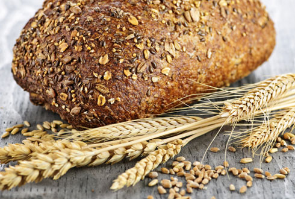

Квас из ржаного хлеба с мятой
Ржаной хлеб порежьте кусочками, подсушите его в духовке в течение 15–20 минут и выложите в посуду, в которой вы будете готовить квас. Эта посуда может быть из нержавеющей стали, эмалированная или деревянная.
Поджаренный ржаной хлеб залейте кипятком и поставьте в теплое место на 10–12 часов. По истечении этого времени настоявшуюся хлебную массу процедите. В хлебной гуще размешайте дрожжи, муку и поставьте в теплое место на 1–2 часа. В это время мяту залейте небольшим количеством кипятка и варите на слабом огне в течение 10–15 минут. Готовый отвар мяты процедите и смешайте с сахаром.
Затем тщательно перемешайте хлебно-дрожжевую массу, мятный отвар с сахаром и хлебную жидкость. Накройте полотном и поставьте в темное теплое место на несколько часов. Когда появится пена, снимите ее. Квас процедите через несколько слоев марли и разлейте по бутылкам.
Храните квас в горизонтальном положении в холодном месте. Через 12–14 часов квас можно употреблять.
Вам понадобится:
2 кг ржаного хлеба
10 л воды
500 г сахара
20 г дрожжей
3 ст. л. муки
100-150 г мяты
Квас из сухарей, приготовленных из ржаного хлеба, с мятой, с изюмом и черной смородиной
Сухари, приготовленные из ржаного хлеба, залейте кипятком и поставьте в теплое место на 1–2 часа. По истечении этого времени хлебный настой процедите, гущу вновь залейте кипятком и поставьте в теплое место еще на 1–2 часа. Затем настой вторично процедите. Два процеженных хлебных раствора смешайте и добавьте воду, сахар, дрожжи, мяту, листья черной смородины и изюм.
Все хорошо перемешайте и поставьте в теплое место на 8-12 часов.
Перебродивший квас процедите и разлейте по бутылкам.
Употребляйте хлебный квас после того, как он постоит в холодном месте 2–3 суток.
Вам понадобится:
2 кг сухарей из ржаного хлеба
20 л воды
1-2 кг сахара
40 г дрожжей
50 г мяты
50 г листьев черной смородины
3-4 шт. изюма
Квас из ржаных сухарей с лимоном
Сухари из ржаного хлеба залейте кипятком и поставьте в темное теплое место на 8-10 часов. По истечении этого времени хлебный настой процедите, добавьте дрожжи, сахар, лимонный сок. Все хорошо перемешайте и поставьте в теплое место на сутки. Перебродивший квас разлейте по бутылкам и плотно закупорьте их.
Окончательно готов квас будет после его хранения в течение 3 дней в холодном месте.
Вам понадобится:
1 кг сухарей из ржаного хлеба
10 л воды
4 ст. сахара
40-50 г дрожжей
сок 2 лимонов
Квас с изюмом
Сухари из ржаного хлеба залейте кипятком в эмалированной посуде и поставьте в темное место на 2–3 часа. Когда хлебный настой остынет, добавьте дрожжи, сахар и все хорошо перемешайте.
Поставьте в темное теплое место на 10–12 часов. По истечении этого времени квас процедите, добавьте изюм и разлейте по бутылкам так, чтобы в каждой бутылке оказалось несколько изюминок.
Бутылки с квасом поставьте на 2–3 дня в холодильник или погреб.
Вам понадобится:
1 кг сухарей из ржаного хлеба
4 л воды
1 ст. сахара
40 г дрожжей
2 ст. л. изюма
Квас окрошечный
Сухари из ржаного хлеба залейте кипятком и поставьте в темное теплое место на 3–4 часа. По истечении этого времени хлебный настой процедите и смешайте с сахаром и разведенными в небольшом количестве воды с мукой дрожжами. Полученную смесь поставьте в теплое место на 5–6 часов, после чего разлейте по бутылкам.
Храните квас в плотно закупоренных бутылках в холодильнике или погребе.
Вам понадобится:
1 кг ржаных сухарей
7 л воды
30-40 г дрожжей
0,5 ст. сахара
2 ст. л. муки
Квас из ржаных корок
С 2–3 буханок ржаного хлеба срежьте поджаристые верхние корки, нарежьте их на мелкие кусочки и залейте кипятком. Посуду с готовящимся квасом плотно закройте и поставьте в теплое место на неделю. По истечении этого времени квас процедите, разлейте по бутылкам и храните в холодном месте.
Вам понадобится:
500 г корок ржаного хлеба
7-8 ст. воды
Квас украинский
Порежьте небольшими ломтиками ржаной хлеб и подсушите его в духовке. Когда хлеб станет коричневым, поместите его в посуду из нержавеющей стали и залейте кипятком. Добавьте 2/3 части ржаной муки и, накрыв полотном, поставьте посуду с готовящимся квасом в темное место на сутки. Теплой водой разведите оставшуюся ржаную муку, добавьте дрожжей и поставьте в теплое место также на сутки.
По истечении этого времени все смешайте и разведите небольшим количеством теплой воды. Квас процедите и разлейте по бутылкам.
Готов квас будет через 2–3 дня.
Вам понадобится:
1 кг ржаного хлеба
0,5 стакана ржаной муки
7 л воды
20 г дрожжей